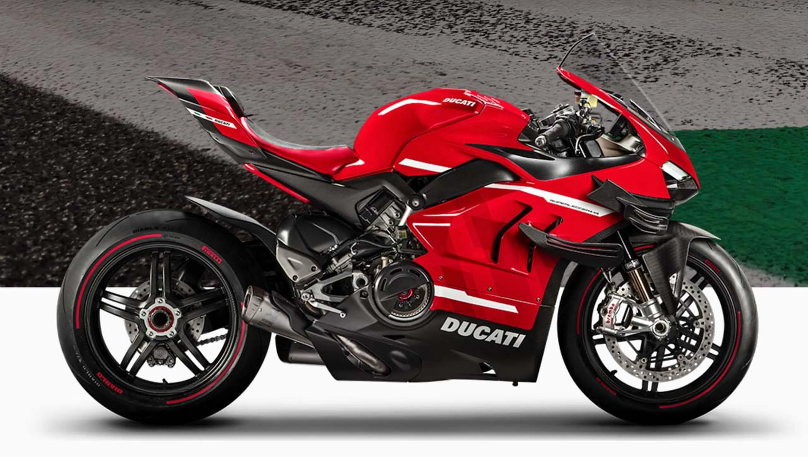

Motocicletas Deportivas
Diseñadas para velocidad y maniobrabilidad. Ideales para circuitos y conducción ágil.
Existen diversas categorías según su uso y diseño. Aquí te contamos las principales:
Diseñadas para velocidad y maniobrabilidad. Ideales para circuitos y conducción ágil.
Confortables y de estilo clásico, perfectas para viajes largos y paseos relajados.
Equipadas para largos recorridos con espacio para equipaje y gran comodidad.
Compactas y fáciles de manejar, ideales para ciudad y desplazamientos cortos.